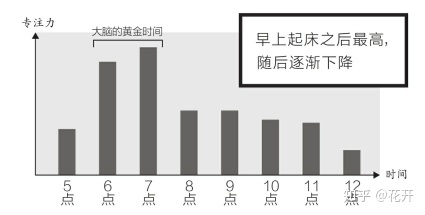

专注力
Table of Contents
知乎上看到一个问题是如何让大脑保持高速运行，其中知乎作者「花开」的回答我觉的不错。
1. 心流
如果要保持大脑的高速运行，那么就肯定需要保持专注力，也就是进行心流的状态。
首先为什么要让大脑保持高速的运行？目的是为了 高效的工作，提高效率，从而让自己有时间投资自己，享受生活 。

Figure 1: 专注力和时间的关系
从 1 可以看出人的专注力在早上起床的后的时间。对比着看，早上一个小时用价值是晚上的四倍。想要高效率的工作，那么需要将需要保持专注力的工作放在早上进行。

Figure 2: 调节注意力
为了进入心流状态，我们必须避免被杂念打乱思绪。因为：
专注力一旦被打断，再恢复到原来的状态至少需要15分钟时间
- 对工作环境和电脑桌面进行彻底的整理，让它们始终保持干净、整洁的状态是提高专注力的必要条件。
- 思考引起的杂念。此处的杂念是与日程有关的事务，所以将它记入 GTD 列表中就好。
- 营造一个“不受干扰”的工作环境。
2. 完美的一天
根据脑科学原理设计最完美的一天
- 7:00-9:00 自我投资 大脑黄金时间
- 9:00-12:00 专注时间 处理“专注性工作”（罐头工作术）
- 12:00-13:00 吃午餐 激发“血清素”活力以恢复专注力，尽可能外出吃饭、晒太阳、细嚼慢咽
- 13:00-16:00 非专注性工作 午间小睡（20-30分钟）、变换工作场所、穿插会议等达到整体重启专注力的目的
- 16:00-18:00 最后冲刺工作时间 为每天工作设定一个最后的期限，因“去甲肾上腺素”的高度集中注意力效果，达到又一轮工作效率小高峰
- 18:00-19:00 有氧运动 大脑专注力完全“重启”
- 19:00-21:00 自我投资 大脑第二个黄金时间
- 21:00-23:00 放松时间 产生“后叶催产素”
- 23:00-7:00 保证7小时以上睡眠 分泌“褪黑激素”
3. 手机对于专注力的影响
手机、各种APP 是专门争对人性的弱点设计的，抵抗“即时快餐”是反人性的行为。与其和各种APP 进行抗争，不如刚开始就远离手机。
现在这个时代，手机对于人们来说是必不可少的电子产品，通过手机我们也能学习到新的知识，但是通过手机只能学习碎片化的知识，不具有系统性。
此回答提到了一本书，《为什么精英都是时间控》，书中提到了“做别人 4 倍的工作量、享受 2 倍的娱乐时间”。